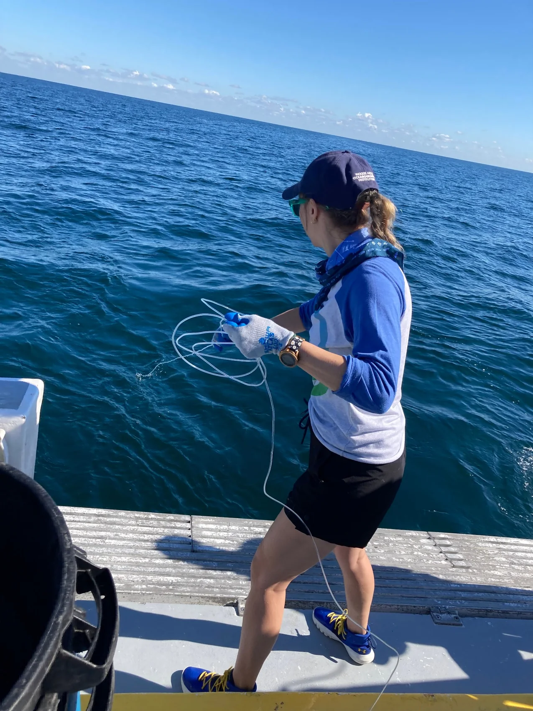
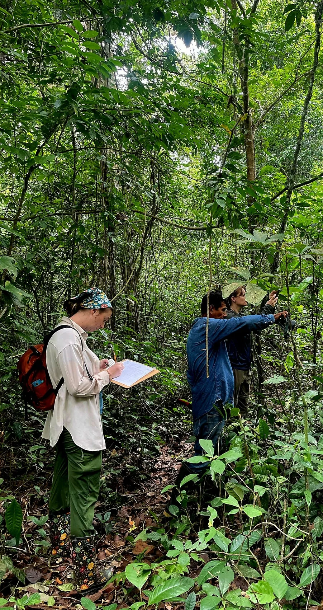
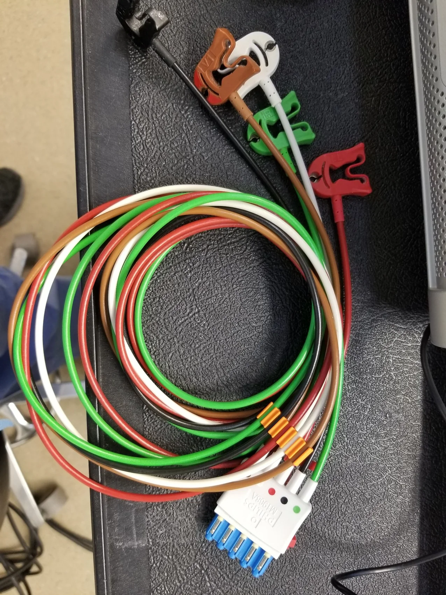
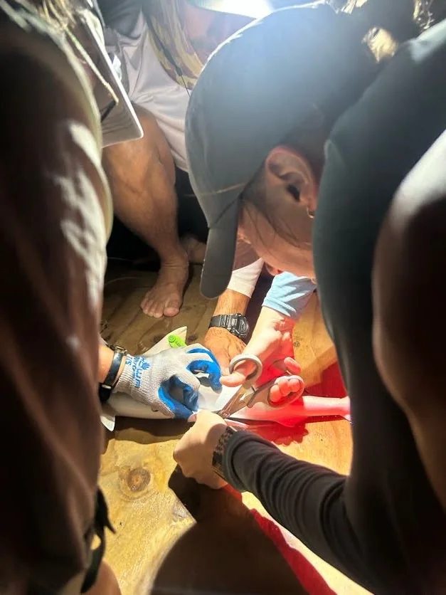

PROGRAM MANAGER / HEALTHCARE · RESEARCH · EDUCATION
Rachel
Chidester.
Making complex programs
work better.
I combine hands-on healthcare experience with program leadership, clear communication, and practical data skills to make complex work run better.
Open to healthcare, research, education and digital program management roles

01 / IMPACT
Results that matter.
Selected highlights across scientific, educational, and clinical work.
02 / WHAT I BRING
Three strengths.
One practical approach.
What I do—and the outcomes it creates for teams and stakeholders.
Program delivery
Coordinated research and fellowship programs serving 200+ applicants per cycle and involving approximately $300K in annual project funding.
Outcome: clear handoffs, consistent onboarding and dependable program delivery.
Program management · Budgets · Onboarding
Field leadership & risk
Facilitated five educational field teams while coordinating scientists, fellows, safety planning and responses to changing conditions.
Outcome: prepared teams, supported participants and timely issue resolution.
Facilitation · Risk awareness · Incident response
Data & improvement
Improved Power BI reporting and streamlined participant communication, reminders and shared tracking workflows.
Outcome: a reported 20% reduction in administrative time and more useful program feedback.
Power BI · CRM · Process improvement
03 / MY STORY
Different settings.
Shared purpose.
I bring clinical discipline and people-first leadership to complex programs.
I began my career working directly with patients and clinical teams—from athletic training and rehabilitation to real-time neuromonitoring in the operating room. Those experiences taught me to communicate clearly, pay attention to details and remain steady when decisions matter.
At Earthwatch, I applied that foundation to international research and education: coordinating programs, facilitating five field fellowship teams and working alongside scientists to assess risks and improve the participant experience.
Clinical foundation500+ surgeries supported · Intraoperative monitoring · Rehabilitation & patient care
Program context: Girls in Science ↗ · EY–Earthwatch ↗



04 / EXPERIENCE
Where I've made an impact.
Hands-on clinical experience combined with research and education program leadership.
Program Manager / Senior Program Coordinator
Earthwatch Institute
- Coordinated international research and education programs, including fellowship recruitment and field facilitation.
- Managed budgets, contracts, reporting, program risks, and cross-functional relationships with scientists and partners.
- Improved workflows and Power BI reporting; mentored coordinators and supported incident response as a U.S. Duty Officer.
Intraoperative Neuromonitor
Synapses IOM
Supported 500+ surgical procedures with real-time neurophysiological monitoring, time-sensitive communication with surgical teams, and setup and troubleshooting of specialized clinical equipment.
Certified Athletic Trainer
NovaCare Rehabilitation
Provided patient-facing injury assessment, rehabilitation planning, emergency response and documentation while collaborating with physicians, athletes and care teams.
Education & credentialMA, Exercise Science · Central Michigan UniversityBS, Athletic Training · Eastern Michigan UniversityMicrosoft Certified: Power Platform Fundamentals (PL-900)
05 / OPPORTUNITIES & NETWORKING
Open to opportunities.
Always open to connections.
I’m exploring program management and operations roles in healthcare, research, education and mission-driven technology. I welcome conversations with recruiters, hiring managers and professionals doing meaningful work.
Based in Royal Oak, Michigan · Remote and Detroit-area hybrid opportunities